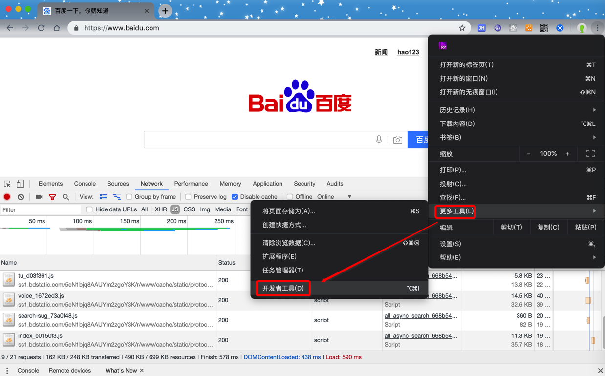

抓包分析
抓包=抓包分析
什么是抓包
不论用哪种方式去写爬虫代码，对于下载来说，具体要请求网站url是什么，调用什么api接口，传递什么参数，以及获取到数据后，用什么规则提取出需要的数据等等内容，都需要事先去分析和研究清楚，这个抓取网络请求的数据包的过程，一般叫做：抓包
即：
- 下载
- 需要访问的网页
url地址或api接口是什么- 以及传递什么
参数
- 以及传递什么
- 需要访问的网页
- 提取
- 对于返回数据，需要抓取具体哪一部分
- 对应的数据的
提取规则是什么
- 对应的数据的
- 对于返回数据，需要抓取具体哪一部分
提示：
虽然对于爬虫的核心流程是先要抓包分析搞清楚逻辑，然后才能去写爬虫代码，不过实际上很多时候，是边分析，边写代码的。
尤其是对于一些复杂的网站或app来说，往往是分析的同时，也要写一些代码去验证和测试抓取的逻辑是否行得通的。
总之，对于爬虫的流程：
- 逻辑上是：先抓包分析，再写爬虫代码
- 实际上（往往）是：边抓包分析，边写代码
抓包的难度
普通网页：抓包分析，一般比较简单复杂网站：对于需要登录才能获取到数据，且加了验证码等做了其他反爬措施和手段的网站和app，抓包分析起来，一般都很复杂- 复杂网站的抓包分析和破解，往往比（之后的，单纯的）写爬虫去 下载+提取+保存，要难多了
抓包常用工具
我们要写爬虫去爬取的数据，从数据源的形态分，大概分两类：
网站=网页=网站中的各种网页app=app中内部发出的请求设计的api接口
根据要抓取的数据的源不同，常用的一些辅助分析工具有：
- 网站抓包分析
Chrome的开发者工具- 
- 快捷键：
- Windows:
Ctrl + Shift + I - Mac:
Command + Option + I
- Windows:
- 如何使用
- 官网资料：Chrome 开发者工具
IE的F12
- app抓包分析
Charles
- 通用工具
WiresharkPostman- 用于对于api去设置参数并发送请求测试是否能获取数据
- 教程：API开发利器：Postman
FiddlerHttpWatcher
具体怎么抓包
先要搞清楚自己想要抓取什么数据，然后再去用工具辅助分析出网页或app等数据源中，如何一步步的获取对应数据，找到期间所要依次访问哪些url或api，传递什么参数，最终获取到所要的数据。
下面就来用实际例子来说明如何抓包。